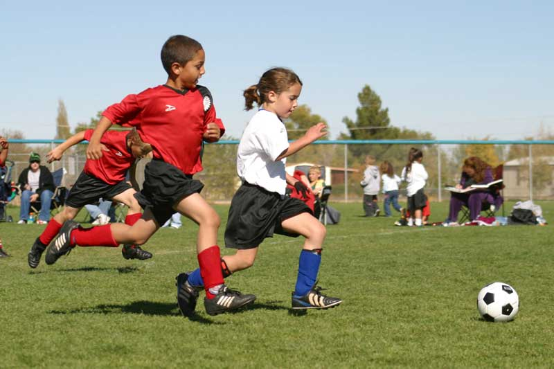

menu
menu
menu
menu
My passion for coaching started when I began taking my younger nieces and nephews out for weekly football and fitness sessions to predominantly help build their confidence, as well as improve their wellbeing & health. During these sessions other children would start to join in, and before we knew it we were managing about 10 or 12 kids in a game of Wembley at the local park 😀.
During these sessions we recognised there was a big demand for coaching & development training for the local kids. However, unfortunately we also noticed that there is a lack of opportunity and scarce resources available for those children desiring to train.
We live in challenging times whether it's work, family commitments or any other extenuating factors. It can be quite difficult to consistently take our little ones out for football sessions.
Our aim at Fitness with Champions, is to fill in that gap: for those that are desiring to train, get in shape, boost their confidence & social skills; for those that are desiring to improve their footballing abilities to progress onto the highest of stages where they can showcase their abilities.
